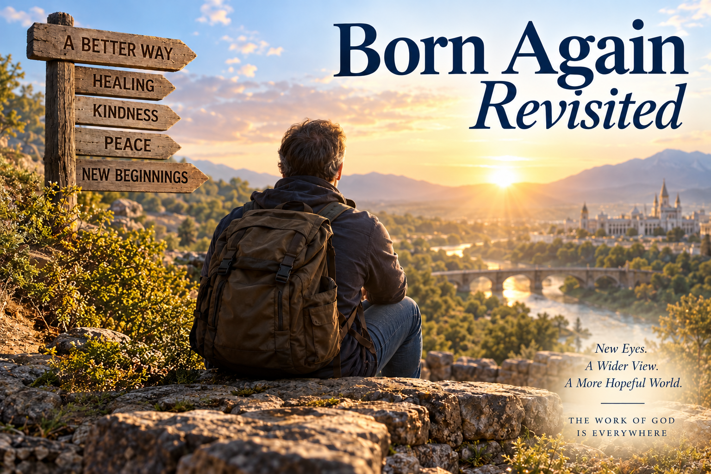

A Jesus-Greg WORLD Thought Piece
Born Again Revisited
Jesus is teaching me to become a watcher of things that are quite nuanced.
Jesus is teaching me to become a watcher of things that are quite nuanced.
That matters because if I am to get MORE Jesus—meaning, in this case, SEE MORE JESUS IN MY LIFE = HAVE MORE JESUS PRESENCE (“Oh look! I see you Jesus, there you are! That's your tale tell sign)—then He has to instruct me about what I am seeing, otherwise I'll miss it.
Sometimes that instruction expands a scripture for me. Sometimes it seems to give an old scripture new birth.
Lately, that scripture is the invitation—and admonition—to be born again.
📺 Here’s the Jesus TV version:
That last idea especially fits my “My Head Makes Movies” / Jesus TV framework: sometimes the problem isn't that the scene is incomprehensible; I'm simply watching it without the necessary backstory.
Born Again—Kept at Arm’s Length?
As a Latter-day Saint, I was raised in a religious culture that did not dive especially deeply into the language of being “born again.”
Of course, virtually all of the restored gospel relates to the concept. Repentance. Baptism. Receiving the Holy Ghost. Becoming sanctified. Experiencing a mighty change of heart. Becoming a new creature in Christ.
It is all there.
But the phrase born again itself seems to me to have been kept somewhat at arm’s length.
That is at least my observation.
When somebody goes in for a temple recommend interview, for example, the bishop does not ask:
Have you been born again? Have you been born of God?
Instead, we are asked questions that certainly relate to that transformation without directly framing the interview around those words.
I can imagine another question:
Do you love Jesus more than you did before?
And because I spent much of my career as an evaluator, I can even imagine the follow-up:
On a scale from 1 to 10—where 1 means “I don't love Him at all” and 10 means “I love Him with all my heart, might, mind, and strength”—where do you think you are today?
But that's my evaluator bias showing.
I trust that temple recommend interviews are exactly as Jesus wants them to be—for now.
What I also believe, or at least strongly suspect, is that Jesus is pouring down His Spirit upon individuals, if not upon the Church more broadly, inviting us to pay more attention to this concept:
You must be born again.
I am at least one person He has been doing this to.
And the core of this thought piece is something Jesus showed me within the last hour.
Maybe the Title Has Been Telling Me Something
I am beginning to sense that being born again—and learning what being born again actually means—is not a side concept in my life. It may be essential to understanding the whole thing.
That possibility becomes especially interesting to me when I remember the title Jesus and I have already given the grand opera of my life—my entire life being redeemed by Christ within the framework of an ongoing improvisation:
Maybe Born Again was never merely the middle phrase in the title.
Maybe it is the hinge.
Cast a Larger Net
To understand what He was showing me about being born again, I needed to cast a larger net.
I understand why people put boundaries around concepts. We classify things as being in or out, as counting or not counting.
Boundaries preserve meaning.
But boundaries can also cause us to lose nuance.
Consider something as ordinary as exercise.
Suppose someone asks:
Do you exercise?
What counts?
Does a marathon count?
Obviously.
Does running a mile count?
Sure.
Walking around the block?
Probably.
Walking to the mailbox?
Standing up ten times from a chair because your physical therapist told you to?
Where exactly does exercise begin?
This matters because Jesus seems to be taking me somewhere similar with the concept of being born again.
The Born-Again Marathon
Christian culture contains some spectacular born-again stories—the mighty-change-of-heart experiences.
Paul on the road to Damascus.
Alma the Younger.
People whose lives seem to divide dramatically into:
and
AFTER.
That is top-end born-again stuff.
That's the marathon.
But within Latter-day Saint teaching, there has also been an emphasis on something more incremental—and, I think, enormously useful: conversion as an ongoing process.
Maybe most of us should not expect to run the traditional Born-Again Marathon every Tuesday.
Maybe much of life consists of running the Born-Again Nano-Marathon.
Imagine the bishop asking:
Have you run the nano-marathon lately?
Or, translated:
Have you had experiences with the Spirit that moved you even a little way toward a better place than you were before?
Or translated once more:
Have you repented?
And that raises an interesting question.
Is every genuine act of repentance—every genuine change toward the good—a form of being born again?
Yeah.
Probably.
At least if every genuine encounter with exercise, however small, still counts as exercise.
The Slippery Slope
This is where people begin guarding sacred language.
And I understand why.
If we make born again too broad, doesn't the phrase eventually mean almost nothing?
If every little improvement counts, then everybody is being born again.
Just as, if walking twenty feet counts as exercise, virtually everybody exercises.
Well...
That's exactly the slippery slope Jesus took me down.
And I don't think He intends to take me somewhere darker with it.
Quite the opposite.
What He showed me makes sense to me, and that sense-making itself feels like an indication that there is some light and truth here worth watching.
Here is what I think Jesus wants me to see:
Everybody is in some state of being born again.
Look at That, Greg
I know someone who has struggled in a marriage for more than thirty years.
Patterns developed.
Yelling.
Arguments.
Contention.
Ways of relating to one another that probably should have changed decades ago.
And now something is changing.
They are doing difficult work that they probably should have done many years earlier. They are trying to formalize a different kind of life together—a relationship less governed by those old patterns.
Hopefully they are moving toward greater peace.
Greater kindness.
Greater love.
And Jesus seems to be saying to me:
Look at that, Greg.
That is being born again.
That is the work of God.
That caught my attention.
Because this is not necessarily what we would ordinarily label a “born-again experience.”
There may be no revival meeting.
No missionary lesson.
No baptismal font.
No dramatic religious testimony accompanying it.
From the outside, it could look like an almost entirely secular event.
Two people finally learning a better way to live together.
And yet Jesus seems to be inviting me to apply religious language to what I am seeing.
Born again.
And almost immediately I thought:
That makes sense.
Secular Born Again
People can be born again without surrounding the experience with a great deal of religious context.
They can simply choose a better way.
That possibility fits beautifully with another restored-gospel idea: the Light of Christ is given to everyone.
People can recognize something better.
They can move toward it.
They can choose less worse.
They can choose more better.
They can leave something darker and move toward something lighter without necessarily having the theological vocabulary to describe what is happening to them.
And perhaps Jesus is asking me to recognize what I am watching.
Birth.
Someone was one thing.
Something happens.
They struggle.
They labor.
They choose.
And gradually—or sometimes suddenly—something different begins living where the old thing lived.
That's birth.
The Labor of Being Born
And maybe the metaphor becomes even more interesting when we remember that birth isn't effortless.
There is labor involved.
Sometimes intense labor.
So perhaps I have been looking for “born again” experiences in places that are too obviously religious.
Maybe Jesus wants me watching the intense labor people everywhere go through trying to find a better way.
The addict trying again.
The angry person learning gentleness.
The frightened person choosing courage.
The estranged family beginning reconciliation.
The selfish person discovering generosity.
The couple replacing contention with kindness.
The person who has lived inside one destructive pattern for thirty years finally saying:
I don't want to live this way anymore.
Something is dying.
Something else is being born.
And I am increasingly willing to call that being born again.
The Redeeming Pregnancy Process
Jesus loves you.
Do you really think He is going to leave you out of the
being-born-again experience?
You may not recognize it yet. You may not be able to see what He is doing with your life. But whoever you are, even your difficult life experiences can become part of the redeeming pregnancy process—the hidden, sometimes painful work through which Christ is forming something new in you.
Pregnancy does not always feel like birth.
Labor certainly does not.
But both can be part of bringing forth a new life.
You may think you are simply going through something.
Jesus may be using it to bring you forth.
Everybody Is Getting Born Again
This doesn't erase Alma the Younger.
It doesn't diminish Paul.
It doesn't weaken the scriptural commandment to be born of God.
Jesus said He did not come to destroy the law but to fulfill it.
Maybe something similar is happening here.
The spectacular born-again experience remains spectacular.
The marathon is still a marathon.
But recognizing the marathon doesn't require me to pretend the nano-marathon isn't movement.
And that is where the idea becomes extraordinarily hopeful to me.
Because suddenly I can look out across the world and see something different.
Not merely Christians having Christian experiences.
Not merely Latter-day Saints having Latter-day Saint experiences.
Not merely formally religious people doing formally religious things.
I can see human beings everywhere struggling toward light.
And Jesus is teaching me to watch.
To notice.
To recognize His fingerprints even when nobody has put His name on what is happening.
Perhaps that is part of what it means for me to SEE MORE JESUS.
If somebody is genuinely moving from darkness toward light, from cruelty toward kindness, from contention toward peace, from bondage toward freedom, from a worse way toward a better way—
I don't have to ask first whether they know the correct religious vocabulary.
I can simply watch what is being born.
They may be very far from the formal Church.
But if they are being born again into the light—
perhaps they are not nearly as far from the Light as they appear.
And perhaps that is the good news Jesus wanted me to see today:
The world is full of delivery rooms.
God is doing His work in more places than I knew how to recognize.
Everybody is getting born again.